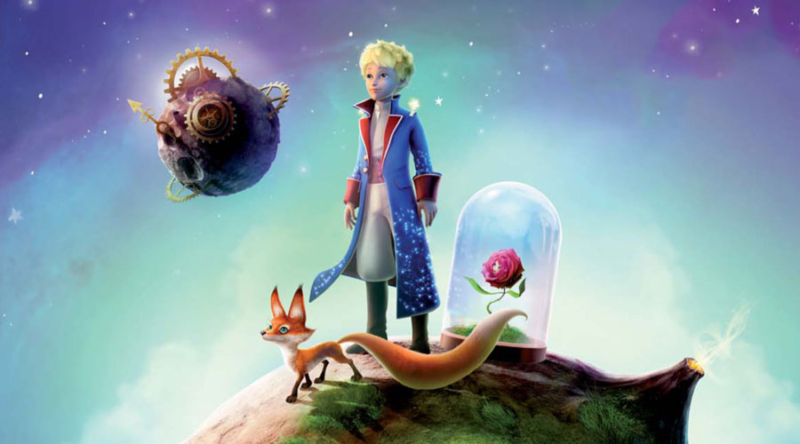
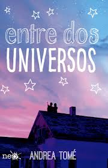

Infantiles
El libro de la selva

Es un clásico de los años sesenta. Es una excelente obra sobre un niño llamado Mowgli que ha cautivado a miles de niños con su fabula. Mowgli fue creado por los lobos del oso Baloo, de la pantera Bangheera y del malvado tigre Shere. Se ha convertido en la arquetipo universal que reúne, como los grandes mitos, lo mejor y lo peor de las andanzas del sr humano en esta jungla inmensa que es el planeta tierra .
El principito

Un aviador cae en medio del desierto de Sahara allí conoce un ser especial (el principito) este cuenta que viene de un planeta minúsculo donde convive con tres pequeños volcanes.
El principito no necesita comer ni beber, solo hace preguntas.
El principito abandona su pequeño planeta y se dirige a los asteroides vecinos en ellos conocerá diferentes personajes.
Juveniles
La chica del tren

Rachel toma siempre el tren, cada mañana siempre es lo mismo, cada paisaje, siempre las mismas casas… Siempre la misma parada que le permite observar a una pareja desayunando desde su terraza, siente que los conoce y les inventa un nombre a ellos: Jess y Jason. Pero una mañana observa algo extraño, observa que no son una pareja feliz como ella piensa.TU NO LA CONOCES A ELLA, PERO ELLA A TI SI...
Entre dos universos

Salva y Mia fans de the Beatles u el cine del terror tienen un hobby poco habitual, asaltar casas abandonadas, se cuelan en edificios, en ruinas, se asoman en las ventanas y se preguntan com era la vida allí, una noche, su juego da un giro inesperado.